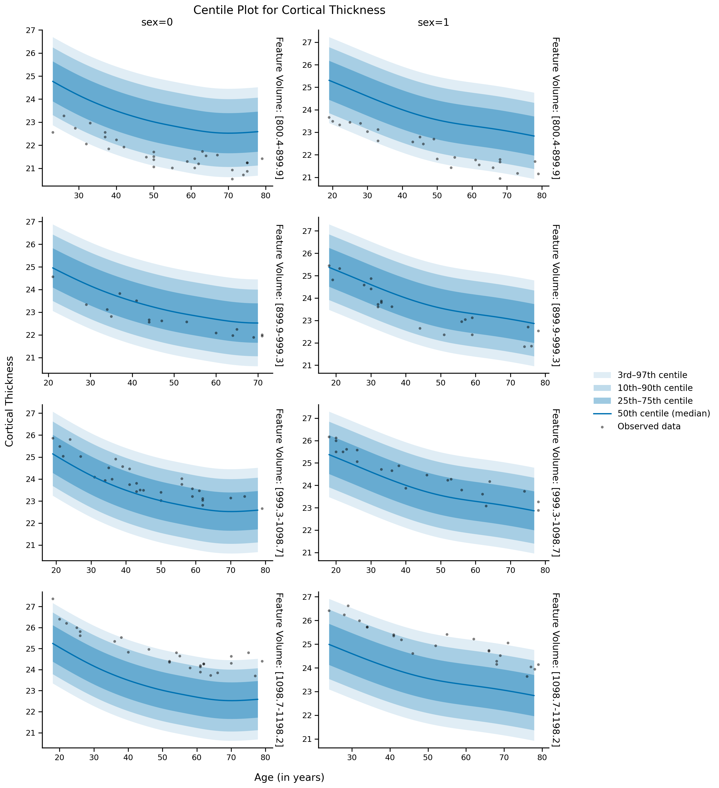
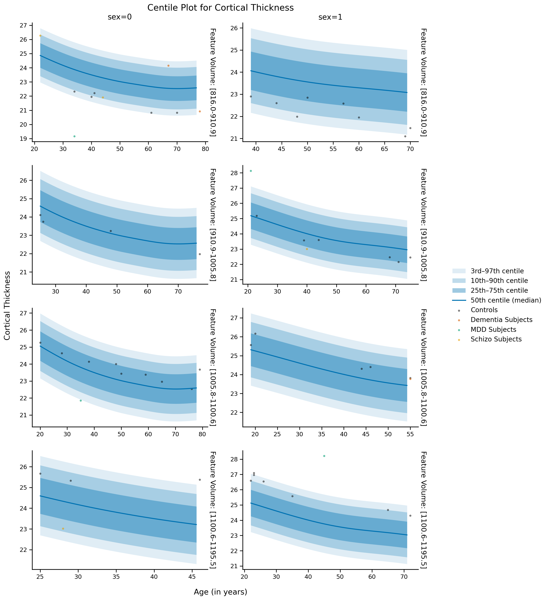

Continuous Centiles with Uncertainty#
gamlss_main.Gamlss.
plot_continuous_centiles#
plot_continuous_centiles(test_data, train_data, centiles=[3, 10, 25, 50, 75, 90, 97],
func_name=None, discrete_split=None, continuous_split=None,
approximated=None, x_axis={'age': 'Age'}, y_axis=None, affected=None,
additional_global_vars=None, figsize=None, save_image=None, file_name=None,
dpi=300, font_size=[16, 14, 14, 12],
centile_color=None, save_pdf=False)
Advanced centile plotting with support for both discrete and continuous variable splitting. Draws the same shaded centile fan as plot_centiles (symmetric blue bands around a solid median line), plus a soft feathered halo past the outermost centiles showing each centile’s estimation uncertainty (95% CI). Creates a subplot grid: one row per continuous-split range, one column per discrete-split value.
Parameters:
test_data : pandas.DataFrame
DataFrame containing the test data
train_data : pandas.DataFrame
DataFrame containing the training data
centiles : list, default=[3, 10, 25, 50, 75, 90, 97]
List of centiles to plot
func_name : str, optional
Distribution family name. If None (default), the model’s own family is used; a different family raises an error
discrete_split : dict, optional
Dictionary with column name as key and list of values for discrete splitting
continuous_split : dict, optional
Dictionary with column name as key and tuple of (display_name, n_splits)
approximated : dict, optional
Dictionary of variables with fixed values instead of mean/mode
x_axis : dict, default={‘age’: ‘Age’}
Dictionary mapping column name to display label for x-axis
y_axis : str, optional
Name of y-axis variable (defaults to model’s y_val)
affected : array-like or pandas.Series, optional
Array indicating affected status
'None', NaN and the healthy labels ('healthy', 'healthy control(s)', 'control(s)', any case) are drawn as Controls; every other label is drawn as its own group. Labels that mention ‘healthy’ or ‘control’ but are not on this list (e.g. 'healthy subject', 'unhealthy') raise an error asking you to rename them.
additional_global_vars : list, optional
Column names for global stats calculation
figsize : tuple, optional
Figure size (calculated automatically if None)
save_image : str, optional
Folder path to save image
file_name : str, optional
File name for saved image
dpi : int, default=300
DPI for saved image
font_size : list, default=[16, 14, 14, 12]
Font sizes for [title, axes labels, subplot titles, legend]
centile_color : str, optional
Hex color for the centile fan and its uncertainty halo. Defaults to a colorblind-safe blue (#0072B2).
save_pdf : bool, default=False
If True, additionally saves a vector .pdf copy alongside the primary saved image.
Returns:
(fig, axes) : (matplotlib.figure.Figure, numpy.ndarray)
The Figure and the 2D array of subplot Axes used, so you can keep customizing after this call (e.g. axes[0, 0].set_ylim(...), fig.savefig(...)).
Examples:
# Plotting centiles
# For training dataset
gamlss_model.plot_continuous_centiles(df_train, df_train,
func_name='SHASH',
centiles=[3, 10, 25, 50, 75, 90, 97],
discrete_split={'sex': [0, 1]},
continuous_split={'feature_volume1':["Feature Volume", 4]},
approximated={"site":"ESZYC"},
x_axis={'age': 'Age (in years)'},
y_axis = "Cortical Thickness",
figsize=None, save_image=None, file_name=None,
dpi=300, font_size=[16, 14, 14, 12]);
site: user provided = ESZYC

# Plotting centiles
# For test dataset (along with affected)
gamlss_model.plot_continuous_centiles(test_data1, df_train,
func_name='SHASH',
centiles=[3, 10, 25, 50, 75, 90, 97],
discrete_split={'sex': [0, 1]},
continuous_split={'feature_volume1':["Feature Volume", 4]},
approximated={"site":"HLMEG"},
x_axis={'age': 'Age (in years)'},
y_axis = "Cortical Thickness",
affected=test_data1['affected']);
site: user provided = HLMEG
Affected distribution after filtering:
(array(['Dementia', 'MDD', 'None', 'Schizo'], dtype=object), array([ 3, 4, 47, 4]))
